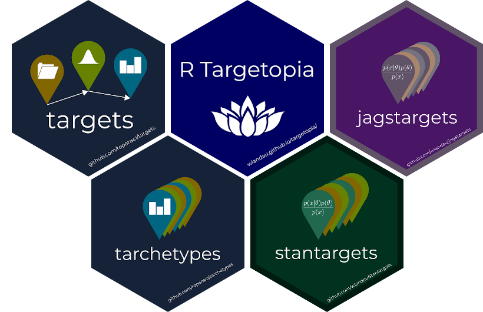

Branching overview
Nathan Layman
Benefits of Targets
Handles projects at scale
Exposes the flow of the project
Targets workflow ‘self-documents’
Targets takes care of dependency for you
Increases reproducibility and readability
Before branching: background
Before we get into targets we’ll review:
Group-split-apply-combine pattern
A pattern is a general concept that applies across programming languages.
Sepal.Length Sepal.Width Petal.Length Petal.Width Species
1 5.1 3.5 1.4 0.2 setosa
2 4.9 3.0 1.4 0.2 setosa
3 4.7 3.2 1.3 0.2 setosa
4 4.6 3.1 1.5 0.2 setosa
5 5.0 3.6 1.4 0.2 setosa
6 5.4 3.9 1.7 0.4 setosa
7 4.6 3.4 1.4 0.3 setosa
8 5.0 3.4 1.5 0.2 setosa
9 4.4 2.9 1.4 0.2 setosa
10 4.9 3.1 1.5 0.1 setosa
11 5.4 3.7 1.5 0.2 setosa
12 4.8 3.4 1.6 0.2 setosa
13 4.8 3.0 1.4 0.1 setosa
14 4.3 3.0 1.1 0.1 setosa
15 5.8 4.0 1.2 0.2 setosa
16 5.7 4.4 1.5 0.4 setosa
17 5.4 3.9 1.3 0.4 setosa
18 5.1 3.5 1.4 0.3 setosa
19 5.7 3.8 1.7 0.3 setosa
20 5.1 3.8 1.5 0.3 setosa
21 5.4 3.4 1.7 0.2 setosa
22 5.1 3.7 1.5 0.4 setosa
23 4.6 3.6 1.0 0.2 setosa
24 5.1 3.3 1.7 0.5 setosa
25 4.8 3.4 1.9 0.2 setosa
26 5.0 3.0 1.6 0.2 setosa
27 5.0 3.4 1.6 0.4 setosa
28 5.2 3.5 1.5 0.2 setosa
29 5.2 3.4 1.4 0.2 setosa
30 4.7 3.2 1.6 0.2 setosa
31 4.8 3.1 1.6 0.2 setosa
32 5.4 3.4 1.5 0.4 setosa
33 5.2 4.1 1.5 0.1 setosa
34 5.5 4.2 1.4 0.2 setosa
35 4.9 3.1 1.5 0.2 setosa
36 5.0 3.2 1.2 0.2 setosa
37 5.5 3.5 1.3 0.2 setosa
38 4.9 3.6 1.4 0.1 setosa
39 4.4 3.0 1.3 0.2 setosa
40 5.1 3.4 1.5 0.2 setosa
41 5.0 3.5 1.3 0.3 setosa
42 4.5 2.3 1.3 0.3 setosa
43 4.4 3.2 1.3 0.2 setosa
44 5.0 3.5 1.6 0.6 setosa
45 5.1 3.8 1.9 0.4 setosa
46 4.8 3.0 1.4 0.3 setosa
47 5.1 3.8 1.6 0.2 setosa
48 4.6 3.2 1.4 0.2 setosa
49 5.3 3.7 1.5 0.2 setosa
50 5.0 3.3 1.4 0.2 setosa
51 7.0 3.2 4.7 1.4 versicolor
52 6.4 3.2 4.5 1.5 versicolor
53 6.9 3.1 4.9 1.5 versicolor
54 5.5 2.3 4.0 1.3 versicolor
55 6.5 2.8 4.6 1.5 versicolor
56 5.7 2.8 4.5 1.3 versicolor
57 6.3 3.3 4.7 1.6 versicolor
58 4.9 2.4 3.3 1.0 versicolor
59 6.6 2.9 4.6 1.3 versicolor
60 5.2 2.7 3.9 1.4 versicolor
61 5.0 2.0 3.5 1.0 versicolor
62 5.9 3.0 4.2 1.5 versicolor
63 6.0 2.2 4.0 1.0 versicolor
64 6.1 2.9 4.7 1.4 versicolor
65 5.6 2.9 3.6 1.3 versicolor
66 6.7 3.1 4.4 1.4 versicolor
67 5.6 3.0 4.5 1.5 versicolor
68 5.8 2.7 4.1 1.0 versicolor
69 6.2 2.2 4.5 1.5 versicolor
70 5.6 2.5 3.9 1.1 versicolor
71 5.9 3.2 4.8 1.8 versicolor
72 6.1 2.8 4.0 1.3 versicolor
73 6.3 2.5 4.9 1.5 versicolor
74 6.1 2.8 4.7 1.2 versicolor
75 6.4 2.9 4.3 1.3 versicolor
76 6.6 3.0 4.4 1.4 versicolor
77 6.8 2.8 4.8 1.4 versicolor
78 6.7 3.0 5.0 1.7 versicolor
79 6.0 2.9 4.5 1.5 versicolor
80 5.7 2.6 3.5 1.0 versicolor
81 5.5 2.4 3.8 1.1 versicolor
82 5.5 2.4 3.7 1.0 versicolor
83 5.8 2.7 3.9 1.2 versicolor
84 6.0 2.7 5.1 1.6 versicolor
85 5.4 3.0 4.5 1.5 versicolor
86 6.0 3.4 4.5 1.6 versicolor
87 6.7 3.1 4.7 1.5 versicolor
88 6.3 2.3 4.4 1.3 versicolor
89 5.6 3.0 4.1 1.3 versicolor
90 5.5 2.5 4.0 1.3 versicolor
91 5.5 2.6 4.4 1.2 versicolor
92 6.1 3.0 4.6 1.4 versicolor
93 5.8 2.6 4.0 1.2 versicolor
94 5.0 2.3 3.3 1.0 versicolor
95 5.6 2.7 4.2 1.3 versicolor
96 5.7 3.0 4.2 1.2 versicolor
97 5.7 2.9 4.2 1.3 versicolor
98 6.2 2.9 4.3 1.3 versicolor
99 5.1 2.5 3.0 1.1 versicolor
100 5.7 2.8 4.1 1.3 versicolor
101 6.3 3.3 6.0 2.5 virginica
102 5.8 2.7 5.1 1.9 virginica
103 7.1 3.0 5.9 2.1 virginica
104 6.3 2.9 5.6 1.8 virginica
105 6.5 3.0 5.8 2.2 virginica
106 7.6 3.0 6.6 2.1 virginica
107 4.9 2.5 4.5 1.7 virginica
108 7.3 2.9 6.3 1.8 virginica
109 6.7 2.5 5.8 1.8 virginica
110 7.2 3.6 6.1 2.5 virginica
111 6.5 3.2 5.1 2.0 virginica
112 6.4 2.7 5.3 1.9 virginica
113 6.8 3.0 5.5 2.1 virginica
114 5.7 2.5 5.0 2.0 virginica
115 5.8 2.8 5.1 2.4 virginica
116 6.4 3.2 5.3 2.3 virginica
117 6.5 3.0 5.5 1.8 virginica
118 7.7 3.8 6.7 2.2 virginica
119 7.7 2.6 6.9 2.3 virginica
120 6.0 2.2 5.0 1.5 virginica
121 6.9 3.2 5.7 2.3 virginica
122 5.6 2.8 4.9 2.0 virginica
123 7.7 2.8 6.7 2.0 virginica
124 6.3 2.7 4.9 1.8 virginica
125 6.7 3.3 5.7 2.1 virginica
126 7.2 3.2 6.0 1.8 virginica
127 6.2 2.8 4.8 1.8 virginica
128 6.1 3.0 4.9 1.8 virginica
129 6.4 2.8 5.6 2.1 virginica
130 7.2 3.0 5.8 1.6 virginica
131 7.4 2.8 6.1 1.9 virginica
132 7.9 3.8 6.4 2.0 virginica
133 6.4 2.8 5.6 2.2 virginica
134 6.3 2.8 5.1 1.5 virginica
135 6.1 2.6 5.6 1.4 virginica
136 7.7 3.0 6.1 2.3 virginica
137 6.3 3.4 5.6 2.4 virginica
138 6.4 3.1 5.5 1.8 virginica
139 6.0 3.0 4.8 1.8 virginica
140 6.9 3.1 5.4 2.1 virginica
141 6.7 3.1 5.6 2.4 virginica
142 6.9 3.1 5.1 2.3 virginica
143 5.8 2.7 5.1 1.9 virginica
144 6.8 3.2 5.9 2.3 virginica
145 6.7 3.3 5.7 2.5 virginica
146 6.7 3.0 5.2 2.3 virginica
147 6.3 2.5 5.0 1.9 virginica
148 6.5 3.0 5.2 2.0 virginica
149 6.2 3.4 5.4 2.3 virginica
150 5.9 3.0 5.1 1.8 virginica
Group-split-apply-combine pattern
We can implement this in several ways. As a for loop:
<- data.frame ()# Group for (sp in unique (iris$ Species)) {# Split = iris[iris$ Species == sp,]# Apply $ Species <- iris_sp$ Species |> toupper ()# Combine <- rbind (result, iris_sp)
Group-split-apply-combine pattern
We can implement this in several ways. As an apply call:
<- lapply (unique (iris$ Species), function (sp) {= iris[iris$ Species == sp,]$ Species <- iris_sp$ Species |> toupper ()|> bind_rows ()
Group-split-apply-combine pattern
We can implement this in several ways. Or using tidy syntax
<- iris |> group_by (Species) |> mutate (Species = Species |> toupper ())
Group-split-apply-combine pattern
In all of them there is some kind of splitting and looping over results. Here is the result
Sepal.Length Sepal.Width Petal.Length Petal.Width Species
1 5.1 3.5 1.4 0.2 SETOSA
2 4.9 3.0 1.4 0.2 SETOSA
3 4.7 3.2 1.3 0.2 SETOSA
4 4.6 3.1 1.5 0.2 SETOSA
5 5.0 3.6 1.4 0.2 SETOSA
6 5.4 3.9 1.7 0.4 SETOSA
7 4.6 3.4 1.4 0.3 SETOSA
8 5.0 3.4 1.5 0.2 SETOSA
9 4.4 2.9 1.4 0.2 SETOSA
10 4.9 3.1 1.5 0.1 SETOSA
11 5.4 3.7 1.5 0.2 SETOSA
12 4.8 3.4 1.6 0.2 SETOSA
13 4.8 3.0 1.4 0.1 SETOSA
14 4.3 3.0 1.1 0.1 SETOSA
15 5.8 4.0 1.2 0.2 SETOSA
16 5.7 4.4 1.5 0.4 SETOSA
17 5.4 3.9 1.3 0.4 SETOSA
18 5.1 3.5 1.4 0.3 SETOSA
19 5.7 3.8 1.7 0.3 SETOSA
20 5.1 3.8 1.5 0.3 SETOSA
21 5.4 3.4 1.7 0.2 SETOSA
22 5.1 3.7 1.5 0.4 SETOSA
23 4.6 3.6 1.0 0.2 SETOSA
24 5.1 3.3 1.7 0.5 SETOSA
25 4.8 3.4 1.9 0.2 SETOSA
26 5.0 3.0 1.6 0.2 SETOSA
27 5.0 3.4 1.6 0.4 SETOSA
28 5.2 3.5 1.5 0.2 SETOSA
29 5.2 3.4 1.4 0.2 SETOSA
30 4.7 3.2 1.6 0.2 SETOSA
31 4.8 3.1 1.6 0.2 SETOSA
32 5.4 3.4 1.5 0.4 SETOSA
33 5.2 4.1 1.5 0.1 SETOSA
34 5.5 4.2 1.4 0.2 SETOSA
35 4.9 3.1 1.5 0.2 SETOSA
36 5.0 3.2 1.2 0.2 SETOSA
37 5.5 3.5 1.3 0.2 SETOSA
38 4.9 3.6 1.4 0.1 SETOSA
39 4.4 3.0 1.3 0.2 SETOSA
40 5.1 3.4 1.5 0.2 SETOSA
41 5.0 3.5 1.3 0.3 SETOSA
42 4.5 2.3 1.3 0.3 SETOSA
43 4.4 3.2 1.3 0.2 SETOSA
44 5.0 3.5 1.6 0.6 SETOSA
45 5.1 3.8 1.9 0.4 SETOSA
46 4.8 3.0 1.4 0.3 SETOSA
47 5.1 3.8 1.6 0.2 SETOSA
48 4.6 3.2 1.4 0.2 SETOSA
49 5.3 3.7 1.5 0.2 SETOSA
50 5.0 3.3 1.4 0.2 SETOSA
51 7.0 3.2 4.7 1.4 VERSICOLOR
52 6.4 3.2 4.5 1.5 VERSICOLOR
53 6.9 3.1 4.9 1.5 VERSICOLOR
54 5.5 2.3 4.0 1.3 VERSICOLOR
55 6.5 2.8 4.6 1.5 VERSICOLOR
56 5.7 2.8 4.5 1.3 VERSICOLOR
57 6.3 3.3 4.7 1.6 VERSICOLOR
58 4.9 2.4 3.3 1.0 VERSICOLOR
59 6.6 2.9 4.6 1.3 VERSICOLOR
60 5.2 2.7 3.9 1.4 VERSICOLOR
61 5.0 2.0 3.5 1.0 VERSICOLOR
62 5.9 3.0 4.2 1.5 VERSICOLOR
63 6.0 2.2 4.0 1.0 VERSICOLOR
64 6.1 2.9 4.7 1.4 VERSICOLOR
65 5.6 2.9 3.6 1.3 VERSICOLOR
66 6.7 3.1 4.4 1.4 VERSICOLOR
67 5.6 3.0 4.5 1.5 VERSICOLOR
68 5.8 2.7 4.1 1.0 VERSICOLOR
69 6.2 2.2 4.5 1.5 VERSICOLOR
70 5.6 2.5 3.9 1.1 VERSICOLOR
71 5.9 3.2 4.8 1.8 VERSICOLOR
72 6.1 2.8 4.0 1.3 VERSICOLOR
73 6.3 2.5 4.9 1.5 VERSICOLOR
74 6.1 2.8 4.7 1.2 VERSICOLOR
75 6.4 2.9 4.3 1.3 VERSICOLOR
76 6.6 3.0 4.4 1.4 VERSICOLOR
77 6.8 2.8 4.8 1.4 VERSICOLOR
78 6.7 3.0 5.0 1.7 VERSICOLOR
79 6.0 2.9 4.5 1.5 VERSICOLOR
80 5.7 2.6 3.5 1.0 VERSICOLOR
81 5.5 2.4 3.8 1.1 VERSICOLOR
82 5.5 2.4 3.7 1.0 VERSICOLOR
83 5.8 2.7 3.9 1.2 VERSICOLOR
84 6.0 2.7 5.1 1.6 VERSICOLOR
85 5.4 3.0 4.5 1.5 VERSICOLOR
86 6.0 3.4 4.5 1.6 VERSICOLOR
87 6.7 3.1 4.7 1.5 VERSICOLOR
88 6.3 2.3 4.4 1.3 VERSICOLOR
89 5.6 3.0 4.1 1.3 VERSICOLOR
90 5.5 2.5 4.0 1.3 VERSICOLOR
91 5.5 2.6 4.4 1.2 VERSICOLOR
92 6.1 3.0 4.6 1.4 VERSICOLOR
93 5.8 2.6 4.0 1.2 VERSICOLOR
94 5.0 2.3 3.3 1.0 VERSICOLOR
95 5.6 2.7 4.2 1.3 VERSICOLOR
96 5.7 3.0 4.2 1.2 VERSICOLOR
97 5.7 2.9 4.2 1.3 VERSICOLOR
98 6.2 2.9 4.3 1.3 VERSICOLOR
99 5.1 2.5 3.0 1.1 VERSICOLOR
100 5.7 2.8 4.1 1.3 VERSICOLOR
101 6.3 3.3 6.0 2.5 VIRGINICA
102 5.8 2.7 5.1 1.9 VIRGINICA
103 7.1 3.0 5.9 2.1 VIRGINICA
104 6.3 2.9 5.6 1.8 VIRGINICA
105 6.5 3.0 5.8 2.2 VIRGINICA
106 7.6 3.0 6.6 2.1 VIRGINICA
107 4.9 2.5 4.5 1.7 VIRGINICA
108 7.3 2.9 6.3 1.8 VIRGINICA
109 6.7 2.5 5.8 1.8 VIRGINICA
110 7.2 3.6 6.1 2.5 VIRGINICA
111 6.5 3.2 5.1 2.0 VIRGINICA
112 6.4 2.7 5.3 1.9 VIRGINICA
113 6.8 3.0 5.5 2.1 VIRGINICA
114 5.7 2.5 5.0 2.0 VIRGINICA
115 5.8 2.8 5.1 2.4 VIRGINICA
116 6.4 3.2 5.3 2.3 VIRGINICA
117 6.5 3.0 5.5 1.8 VIRGINICA
118 7.7 3.8 6.7 2.2 VIRGINICA
119 7.7 2.6 6.9 2.3 VIRGINICA
120 6.0 2.2 5.0 1.5 VIRGINICA
121 6.9 3.2 5.7 2.3 VIRGINICA
122 5.6 2.8 4.9 2.0 VIRGINICA
123 7.7 2.8 6.7 2.0 VIRGINICA
124 6.3 2.7 4.9 1.8 VIRGINICA
125 6.7 3.3 5.7 2.1 VIRGINICA
126 7.2 3.2 6.0 1.8 VIRGINICA
127 6.2 2.8 4.8 1.8 VIRGINICA
128 6.1 3.0 4.9 1.8 VIRGINICA
129 6.4 2.8 5.6 2.1 VIRGINICA
130 7.2 3.0 5.8 1.6 VIRGINICA
131 7.4 2.8 6.1 1.9 VIRGINICA
132 7.9 3.8 6.4 2.0 VIRGINICA
133 6.4 2.8 5.6 2.2 VIRGINICA
134 6.3 2.8 5.1 1.5 VIRGINICA
135 6.1 2.6 5.6 1.4 VIRGINICA
136 7.7 3.0 6.1 2.3 VIRGINICA
137 6.3 3.4 5.6 2.4 VIRGINICA
138 6.4 3.1 5.5 1.8 VIRGINICA
139 6.0 3.0 4.8 1.8 VIRGINICA
140 6.9 3.1 5.4 2.1 VIRGINICA
141 6.7 3.1 5.6 2.4 VIRGINICA
142 6.9 3.1 5.1 2.3 VIRGINICA
143 5.8 2.7 5.1 1.9 VIRGINICA
144 6.8 3.2 5.9 2.3 VIRGINICA
145 6.7 3.3 5.7 2.5 VIRGINICA
146 6.7 3.0 5.2 2.3 VIRGINICA
147 6.3 2.5 5.0 1.9 VIRGINICA
148 6.5 3.0 5.2 2.0 VIRGINICA
149 6.2 3.4 5.4 2.3 VIRGINICA
150 5.9 3.0 5.1 1.8 VIRGINICA
Group-split-apply-combine pattern
There are two kinds of looping that can happen.
Group-split-apply-combine pattern
There are two kinds of looping that can happen.
Scope
Scope refers to the part of a script where a name binding is valid. What I mean by that is:
<- function (number) {for (i in 1 : number) {print (i)# What happens when we try to access the variable `i`? print (i)
Scope
There are several kinds of scope in R:
Global. Variables that are in scope throughout
Function. Variables that are in scope within a function
Targets. Targets that get run during tar_make()
Namespace, …
Scope is important because static and dynamic branching operate on variables that live in different scopes !
Static Branching Overview
Benefit: clean branch names
Cost: messy visnetwork, manual COMBINE
Scope: Global
Good for: Branching across columns *
Use: tar_map()
*Exceptions abound
Static branching sample visnetwork
Dynamic Branching Overview
Benefit: clean tree, automatic aggregation
Cost: messy branch names
Scope: Targets
Good for: Branching across rows *
Use: patterns and iteration
*Exceptions abound
Dynamic branching sample visnetwork
Dynamic patterns and iteration
Remember the group-split-apply-combine pattern we talked about earlier?
iteration handles how we SPLIT and COMBINE.
pattern handles the how we GROUP
The target defined in tar_target() is where you specify the APPLY
Dynamic patterns and iteration
Here’s an example:
# remember dynamic branching operates on targets tar_target (data, iris),# Iteration here generates a branch for each species group tar_target (split_data, |> group_by (Species) |> tar_group (),iteration = "group" )tar_target (data_toupper, split_data |> mutate (Spieces = toupper (Species))pattern = map (split_data)iteration = "vector"
What does it look like when you run the pipeline?
> tar_make ()1 .3.2 ──3 .4.0 ✔ purrr 1 .0.1 3 .1.8 ✔ dplyr 1 .0.10 1 .2.1 ✔ stringr 1 .5.0 2 .1.3 ✔ forcats 0 .5.2 tidyverse_conflicts () ──:: filter () masks stats:: filter ():: lag () masks stats:: lag ()0.001 seconds]0.013 seconds]0.005 seconds]0.007 seconds]0.003 seconds]0.003 seconds]0.001 seconds]0.002 seconds]0.002 seconds]0.002 seconds]0.001 seconds]0.139 seconds]
What does it look like when you run the pipeline AGAIN?
> tar_make ()1 .3.2 ──3 .4.0 ✔ purrr 1 .0.1 3 .1.8 ✔ dplyr 1 .0.10 1 .2.1 ✔ stringr 1 .5.0 2 .1.3 ✔ forcats 0 .5.2 tidyverse_conflicts () ──:: filter () masks stats:: filter ():: lag () masks stats:: lag ()0.122 seconds]
Friends has this ever happened to you?
Have you:
Ever had one iteration fail in a big map_dfr() or map?
then you have to figure out what went wrong
fix the input data a little
had to start ALL OVER.
Well, NO MORE with dynamic branching!
What’s more
If you’re running a ton of slow fitting models as branches and ONE FAILS you can still:
finish the pipeline anyway and
aggregate the ones that DIDN’T fail!
Just include the following at the top of your targets.R file!
tar_option_set (error = "null" # Every dynamic branch that errors out just returns NULL.
but wait there’s MORE!
Making your dynamic branches run in parallel involves just 2 lines of code!
`future::plan(future.callr::callr, workers = 5)` at the top of your targets.R file
Then just run tar_make_future() instead of tar_make()!
And that’s just the begining!
